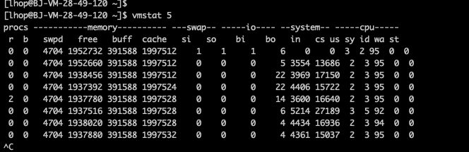

linux性能优化
linux性能优化
平均负载
平均负载指的是当前系统下, 系统中的可运行还有不可中断的平均进程数, 也就是平均活跃进程数. 跟CPU使用率没有直接关系
- 可运行的进程: 是指正在使用 CPU 或者正在等待 CPU 的进程, 也就是我们常用 ps 命令看到的, 处于 R 状态（Running 或 Runnable）的进程
- 不可中断平均进程: 正处于内核态关键流程中的进程, 并且这些流程是不可打断的, 比如最常见的是等待硬件设备的 I/O 响应，也就是我们在 ps 命令中看到的 D 状态(Uninterruptible Sleep, 也称为 Disk Sleep)的进程
当平均负载高于 CPU 数量 70% 的时候，应该分析下排查负载高的问题
平均负载跟CPU使用率关系
CPU 使用率，是单位时间内 CPU 繁忙情况的统计，跟平均负载并不一定完全对应
- CPU 密集型进程, 使用大量 CPU 会导致平均负载升高, 此时这两者是一致的
- I/O 密集型进程, 等待 I/O 也会导致平均负载升高, 但 CPU 使用率不一定很高
- 大量等待 CPU 的进程调度也会导致平均负载升高, 此时的 CPU 使用率也会比较高
平均负载命令
- uptime: 查看当前系统负载情况
- cat /proc/cpuinfo: 查看系统的CPU数量, 平均负载指的是逻辑核数
总核数 = 物理CPU个数 × 每颗物理CPU的核数
总逻辑CPU数 = 物理CPU个数 × 每颗物理CPU的核数 × 超线程数
物理CPU个数指的是: cat /proc/cpuinfo 来查看, 其中的physical id就是每个物理CPU的ID, 能找到几个physical id就代表计算机实际有几个CPU
逻辑CPU个数: cat /proc/cpuinfo 来查看, 其中的core 指的就是核心数 - mpstat -P ALL 5 1: 显示所有CPU的指标，并在间隔5秒输出一组数据

- pidstat -u 5 1: 间隔5秒后输出一组数据，-u表示CPU指标, 查看的是进程CPU状态

CPU上下文切换过程
切换任务的时候, 需要记录任务当前的状态和获取下一任务的信息和地址(指针), 这就是上下文的内容。
上下文是指某一时间点CPU寄存器和程序计数器的内容, 广义上还包括内存中进程的虚拟地址映射信息.
上下文切换的过程：
(1)记录当前任务的上下文(即寄存器和计算器等所有的状态)
(2)找到新任务的上下文并加载
(3)切换到新任务的程序计算器位置, 恢复其任务
CPU上下文切换场景
- 进程间切换: 一个进程切换到另外一个进程,
- 进程切换过程:
(a)接收到切换信号，挂起进程，记录当前进程的虚拟内存、栈等资源存储;
(b)将这个进程在 CPU 中的上下文状态存储于起来;
(c)然后在内存中检索下一个进程的上下文;
(d)并将其加载到 CPU的寄存器中恢复;
(3)还需要刷新进程的虚拟内存和用户栈;
(f)最后跳转到程序计数器所指向的位置（即跳转到进程被中断时的代码行），以恢复该进程 - 进程切换场景
(a)、根据调度策略, 将CPU时间划片为对应的时间片, 当时间片耗尽, 当前进程必须挂起
(b)、资源不足的, 在获取到足够资源之前进程挂起。
(c)、进程sleep挂起进程
(d)、高优先级进程导致当前进度挂起
(e)、硬件中断, 导致当前进程挂起
- 线程间切换:
- 线程间切换过程
(1)、不同进程之间的线程上下文切换, 其过程和进程上下文切换大致相同
(2)、进程内部的线程进上下文切换。不需要切换进程的用户资源，只需要切换线程私有的数据和寄存器等。这会比进程上下文进程切换消耗的资源少，所以多线程相比多进程的优势。
- 中断上下文切换:
快速响应硬件的事件, 中断处理会打断进程的正常调度和执行
同一CPU内, 硬件中断优先级高于进程。切换过程类似于系统调用的时候，不涉及到用户运行态资源。但大量的中断上下文切换同样可能引发性能问题。 - 中断上下文切换:
快速响应硬件的事件, 中断处理会打断进程的正常调度和执行
同一CPU内, 硬件中断优先级高于进程。切换过程类似于系统调用的时候，不涉及到用户运行态资源。但大量的中断上下文切换同样可能引发性能问题。
CPU上下文命令
- vmstat 5: 看一下系统的上下文切换次数, 每隔五秒输出一组数据
- r: 就绪队列的长度，也就是正在运行和等待 CPU 的进程数
- b: 处于不可中断睡眠状态的进程数
- cs: 上下文切换次数
- in: 每秒中断的次数
- pidstat -w 5: 每隔五秒输出进程上下文切换次数
- cswch/s: 每秒自愿上下文切换, 指进程无法获取所需资源, 导致的上下文切换, 比如 I/O、内存等系统资源不足时，就会发生自愿上下文切换。而非自愿上下文切换
- nvcswch/s: 每秒非自愿上下文切换, 指进程由于时间片已到等原因，被系统强制调度，进而发生的上下文切换。比如说，大量进程都在争抢 CPU 时，就容易发生非自愿上下文切换
- pidstat -wt 1: 每隔1秒输出一组数据, -wt 参数表示输出线程的上下文切换
本博客所有文章除特别声明外，均采用 CC BY-SA 4.0 协议 ，转载请注明出处！